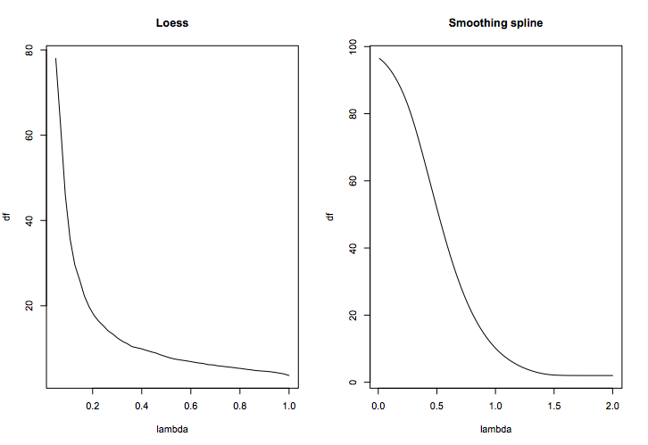
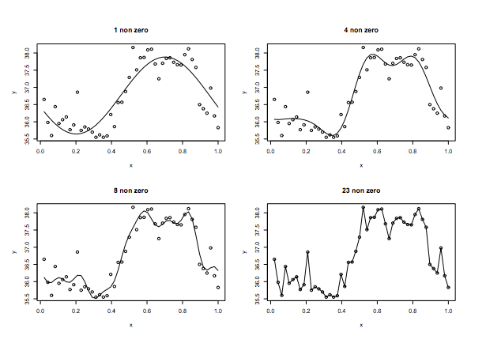
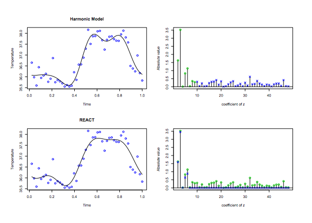

Unless you are a billionaire there is no such thing as complete intellectual freedom (probably not even then). At some level you have to convince someone that what you are working on is a reasonable idea (hiring committee, promotion committee, grant study section, venture capitalist, etc.). There is extreme value in being able to make a compelling argument for your research and knowing what kind of "marketing" to do.
Smoothing II
Jeffrey Leek
Johns Hopkins Bloomberg School of Public Health
Pro tip
Paper of the day
Today's slide credits

Recall the goal
\[Y_i = f(x_i) + \varepsilon_i\]
- \(f(x)\) is an unknown function and \(\varepsilon_i\) is an error term, representing random errors in the observations or variability from sources not included in the \(x_i\).
- We assume the errors \(\varepsilon_i\) are IID with mean 0 and finite variance \(Var(\varepsilon_i) = \sigma^2\).
Splines in terms of spaces and sub-spaces
The\(p\)-dimensional spaces described in Section 4.1 were defined through basis function \(B_j(x), j=1,\dots,p\). So in general we defined for a given range \(I \subset {\mathbb R}^k\)
\[ {\cal G} =\{ g: g(x) = \sum_{j=1}^p \theta_j \beta_j(x), x \in I, (\theta_1,\dots,\theta_p) \in {\mathbb R}^p \} \]
Can be even more flexible
- In practice we have design points \(x_1,\dots,x_n\) and a vector of responses \(y = (y_1,\dots,y_n)\).
- We can think of \(y\) as an element in the \(n\)-dimensional vector space \({\mathbb R}^n\).
- We can go a step further and define a Hilbert space with the usual inner product definition that gives us the norm \[||y|| = \sum_{i=1}^n y_i^2\]
- Now we can think of least squares estimation as the projection of the data \(y\) to the sub-space \(G \subset {\mathbb R}^n\) defined by \(\cal G\) in the following way \[G = \{ g \in {\mathbb R}^n: g = [g(x_1),\dots,g(x_n)]', g \in {\cal G} \}\] because this space is spanned by the vectors \([B_1(x_1),\dots,B_p(x_n)]\) the projection of \(y\) onto \(G\) is \(B(B'B)^{-}B'y\)
Natural splines
- Natural splines add the constraint that the function must be linear after the knots at the end points
- This forces 2 more restrictions since \(f''\) must be 0 at the end points, i.e the space has \(k + 4 - 2\) parameters because of these 2 constraints.
Natural smoothing splines
- What happens if the knots coincide with the dependent variables \(\{X_i\}\). Then there is a function \(g \in \cal G\), the space of cubic splines with knots at \((x_1,\dots,x_n)\), with \(g(x_i) = y_i, i,\dots,n\), i.e. we haven't smoothed at all.
- Among all functions \(g\) with two continuous first derivatives, find the one that minimizes the penalized residual sum of squares \[\sum_{i=1}^n \{ y_i - g(x_i) \}^2 + \lambda \int_a^b \{g''(t)\}^2 dt\] where \(\lambda\) is a fixed constant, and \(a \leq x_1 \leq \dots \leq x_n \leq b\).
- It can be shown (Reinsch 1967) that the solution to this problem is a natural cubic spline with knots at the values of \(x_i\) (so there are \(n-2\) interior knots and \(n-1\) intervals). Here \(a\) and \(b\) are arbitrary as long as they contain the data.
- It seems that this procedure is over-parameterized since a natural cubic spline as this one will have \(n\) degrees of freedom. However we will see that the penalty makes this go down.
Computational aspects
- We use the fact that the solution is a natural cubic spline and write the possible answers as: \[g(x) = \sum_{j=1}^{n} \theta_j B_j(x)\] where \(\theta_j\) are the coefficients and \(B_j(x)\) are the basis functions.
- Notice that if these were cubic splines the functions lie in a \(n+2\) dimensional space, but the natural splines are an \(n\) dimensional subspace.
- Let \(B\) be the \(n \times n\) matrix defined by \[ B_{ij} = B_j(x_i)\] and a penalty matrix \(\Omega\) by \[ \Omega_{ij} = \int_a^b B_i''(t)B_j''(t) \, dt\]
Computational aspects continued
Now we can write the penalized criterion as
\[(y - B\theta)'(y - B\theta) +\lambda\theta'\Omega\theta\]
It seems there are no boundary derivatives constraints but they are implicitly imposed by the penalty term.
Setting derivatives with respect to \(\theta\) equal to 0 gives the estimating equation:\[(B'B + \lambda\Omega)\theta = B'y.\]
The \(\hat{\theta}\) that solves this equation will give us the estimate \(\hat{g} = B \hat{\theta}\).
Is this a linear smoother?
\[\hat{g} = B \theta = B(B'B + \lambda \Omega)^{-1} B'y = ({\mathbf I} + \lambda {\mathbf K})^{-1}y\]
where \({\mathbf K} = B -1 ' \Omega B^{-1}\). Notice we can write the criterion as
\[(y - g)'(y - g) + \lambda g' {\mathbf K} g\]
K is the "kernel" of this linear smoother.
Strontium data
dat = read.table("http://www.biostat.jhsph.edu/~ririzarr/Teaching/754/Data/Sr.dat")
plot(dat,xlab="time (mya)",ylab="ratio",pch=19)

ns() for strontium data
basis2 = ns(dat[,1],df=3)
matplot(basis2,type="l")

ns() and regression
basis2 = ns(dat[,1],df=3)
lm2 = lm(dat[,2] ~ basis2)
plot(dat,pch=19); lines(dat[,1],lm2$fitted,col="red")

Linear smoothers and variance
A linear smoother has the form
\[\hat{f} = S y\]
where \(S\) is the smoother matrix. Sometimes:
\[\hat{f}(x) = \sum_{i=1}^n W_i (x) y_i.\]
Variance of linear interpolation is \(Var[y_1] = \sigma^2\). Variance of a smoothed estimate is:
\[Var[\hat{f}(x)] = \sigma^2 \sum_{i=1}^n W_i^2(x)\]
so \(\sum_{i=1}^n W_i^2(x)\) is the variance reduction.
Variance reduction
The total variance can be written:
\[\sum_{i=1}^n Var[\hat{f}(x_i)] = tr(SS')\sigma^2\]
so the total variance reduction from \(\sum_{i=1}^n Var[y_i]\) is \(tr(SS')/n\).
The same idea is true for linear regression. For linear regression:
\[\sum_{i=1}^n Var[\hat{f}(x_i)] = p \sigma^2\]
so the variance reduction is \((n-p) \sigma^2\).
Degrees of freedom
For linear regression remember the degrees of freedom (for residuals) are \(n-p\) which is approximately the variance reduction.
A commonly used degrees of freedom measure for smoothing is:
\[df = tr(SS')\]
The sensitivity of the fitted value, say \(\hat{f}(x_i)\), to the data point \(y_i\) can be measured by \(W_i(x_i)/\sum_{i=1}^n W_n(x_i)\) or \(S_{ii}\).
The total influence or sensitivity is \(\sum_{i=1}^n W_i(x_i) =tr(S)\). In linear regression \(tr(S)=p\).
Quick example
tme = 1:10; X = model.matrix(~tme + I(tme^2)); Y = bs(tme,df=3)
hatmatx = X %*% solve(t(X) %*% X) %*% t(X); hatmaty = Y %*% solve(t(Y) %*% Y) %*% t(Y)
sum(diag(hatmatx))
[1] 3
sum(diag(hatmaty))
[1] 3
DOF and smoothing

Residual degrees of freedom
Finally we notice that
\[E[ (y - \hat{f})'(y - \hat{f}) ] = \{n - 2tr(S) + tr(SS')\}\sigma^2\]
- In linear regression: \((n-p)\sigma^2\)
- Residual DOF: \(n - 2tr(S) + tr(SS')\)
- Another definition of smoother DF is: \(2tr(S) - tr(SS')\)
Under mild assumptions:
\[1 \leq tr(SS') \leq tr(S) \leq 2tr(S) - tr(SS') \leq n\]
Eigen analysis
For a smoother with symmetric smoother matrix \(S\), the eigendecomposition of \(S\) can be used to describe its behavior.
- Let \(\{ u_1,\dots,u_n \}\) be an orthonormal basis of eigenvectors of \(S\) with eigenvalues \(\theta_1\geq\theta_2\dots\geq\theta_n\):
\[S u_j = \theta_j u_j, j=1,\dots,n\]
Example linear regression
tme = 1:10; X = model.matrix(~ tme)
hatmatx = X %*% solve(t(X) %*% X) %*% t(X); eigen1 = eigen(hatmatx)
par(mfrow=c(1,3)); plot(eigen1$values); plot(eigen1$vectors[,1]); plot(eigen1$vectors[,2])

Eigen analysis of cubic spline
The cubic spline is an important example of a symmetric smoother, and its eigenvectors resemble polynomials of increasing degree.
First 2 eigenvalues are 1 and the rest between 0 and 1.
If presented with a response \(y = u_j\), it shrinks it by an amount \(\theta_j\).
Eigenvalues nd eigenvectors
tme = 1:100; Y = bs(tme,df=10); hatmaty = Y %*% solve(t(Y) %*% Y) %*% t(Y); eigeny = eigen(hatmaty)
layout(matrix(c(1,1,2,3,1,1,4,5),byrow=T,ncol=4))
plot(eigeny$values); for(i in 1:4){plot(eigeny$vectors[,i])}

Non-symmetric S
- Loess and other "nearest neighbor" don't have a symmetric smoothing matrix
- If \(S\) is not symmetric we have complex eigenvalues and the above decomposition is not as easy to interpret.
- So we use the SVD usually: \[S = U D V'\]
- On can think of smoothing as performing a basis transformation \(z =V'y\), shrinking with \(\hat{z} = D z\) the components that are related to "unsmooth components" and then transforming back to the basis \(\hat{y} = U \hat{z}\) we started out with... sort of.
- You can think of smoothing splines like low-pass filtering in signal processing
Economical bases
Suppose that we have equally spaced Guassian data
\[y_i = f(t_i) + \varepsilon_i, i=1,\dots,n\]
\(t_i = (i-1)/n\) and the $\varepsilon_i$s IID \(N(0,\sigma^2)\), many things simplify.
We want to solve this problem:
\[n^{-1} E || \hat{f} - f ||^2 = n^{-1} E \left[ \sum_{i=1}^m \{ \hat{f}(t_i) - f(t_i) \}^2\right].\]
but the MLE is \(\hat{f}_i = y_i\).
Another approach: restrict class
Specify some fixed class \(\cal F\) of functions where \(f\) lies and seek an estimator \(\hat{f}\) attaining minimax risk
\[\inf_{\hat{f}} \sup_{f \in {\cal F}} R(\hat{f},f)\]
- Restricting \(f \in \cal F\) we make assumptions on the smoothness of \(f\).
Useful transformations
- Remember that for \(f \in {\mathbb R}^n\) there are many bases
- Any orthogonal basis can be represented with an orthogonal transform \(U\) that gives us the coefficients for any \(f\) by multiplying \(\xi = U' f\). This means that we can represent any vector as \(f = U \xi\).
- Eigen analysis is one such transform.
- Or we can use the transform to do compression for example.
- For equally spaced data you can use the Discrete Fourier Transform (DFT) \[f_i = a_0 + \sum_{k=1}^{n/2 - 1} \left\{ a_{k} \cos \left(\frac{2\pi k}{n} \, i \right) \, + b_{k} \sin \left(\frac{2 \pi k}{n} \,i \right) \right\} + a_{n/2} \cos (\pi i) \]
- This defines a basis and the coefficients \(a = (a_0,a_1,b_1,\dots,\dots,a_{n/2})'\) can be obtained via \(a = U'f\) with \(U\) having columns of sines and cosines.
Why this is helpful sometimes
The columns are:
\[ U_1 = [n^{-1/2}: 1 \leq i \leq n] \] \[ U_{2k} = [(2/n)^{1/2}\sin\{2\pi k i/n\} : 1 \leq i \leq n], k=1,\dots,n/2 \] \[ U_{2k+1} = [(2/n)^{1/2}\cos\{2\pi k i/n\} : 1 \leq i \leq n], k=1,\dots,n/2-1.\]
- If a signal is close to a sine wave \(f(t) = \cos(2 \pi j t / n + \phi)\) for some integer \(1\leq j \leq n\), only two of the coefficients in \(a\) will be big, namely the ones associated with the columns \(2j-1\) and \(2j\), the rest will be close to 0.
- This makes the basis associated with the DFT very economical (and the periodogram a good detector of hidden periodicities
- For things like voice signals it would be more "economical" to send \(a\) instead of the \(f\). Once \(a\) is received, \(f=U a\) is reconstructed.
- Because we are dealing with equally spaced data, the coefficients of the DFT are also related to smoothness. Notice that the columns of \(U\) are increasing in frequency and thus decreasing in smoothness.
An example
Body temperature of a mouse over time

Periodogram

Bagging proof
Let \(\phi(x,D_{train})\) be the predictor based on a training set \(D_{train}\) then we could create a bagged predictor:
\[\phi_A(x,P) = E_{D}[\phi(x,D)]\]
where \(P\) is the probability distribution over \(D\). Then:
\[e = E_D E_{Y,X}(Y-\phi(X,D))^2\]
aggregated error is:
\[e_A = E_{Y,X}(Y-\phi_A(X,D))^2\]
Using the inequality \((EZ)^2 \leq EZ^2\)
\[e = EY^2 - 2EY\phi_A + E_{Y,X}E_D \phi^2(X,D\] \[ \geq E(Y-\phi_A)^2 = e_A\]
http://statistics.berkeley.edu/sites/default/files/tech-reports/421.pdf